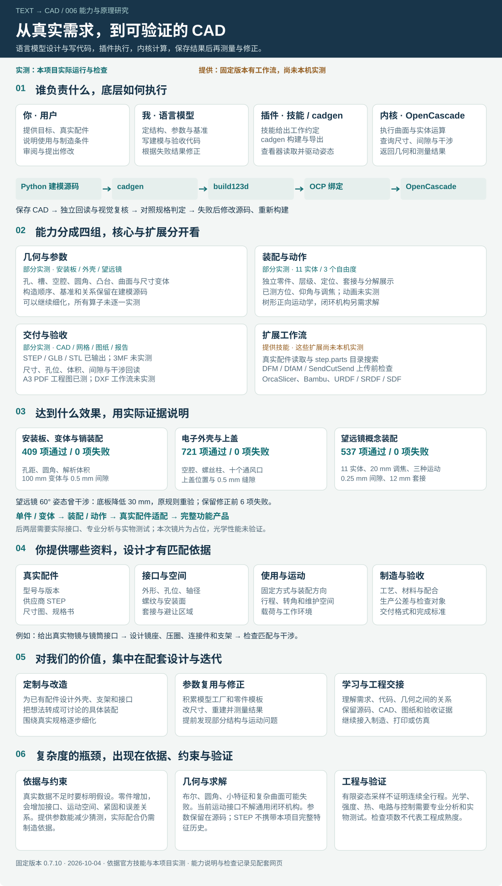
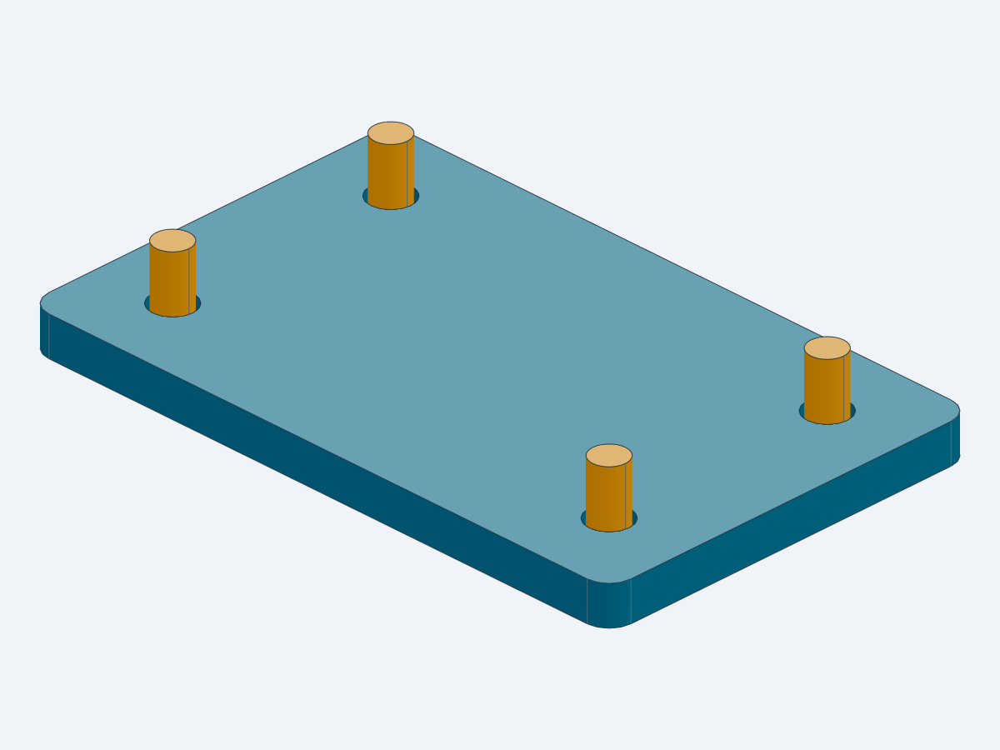
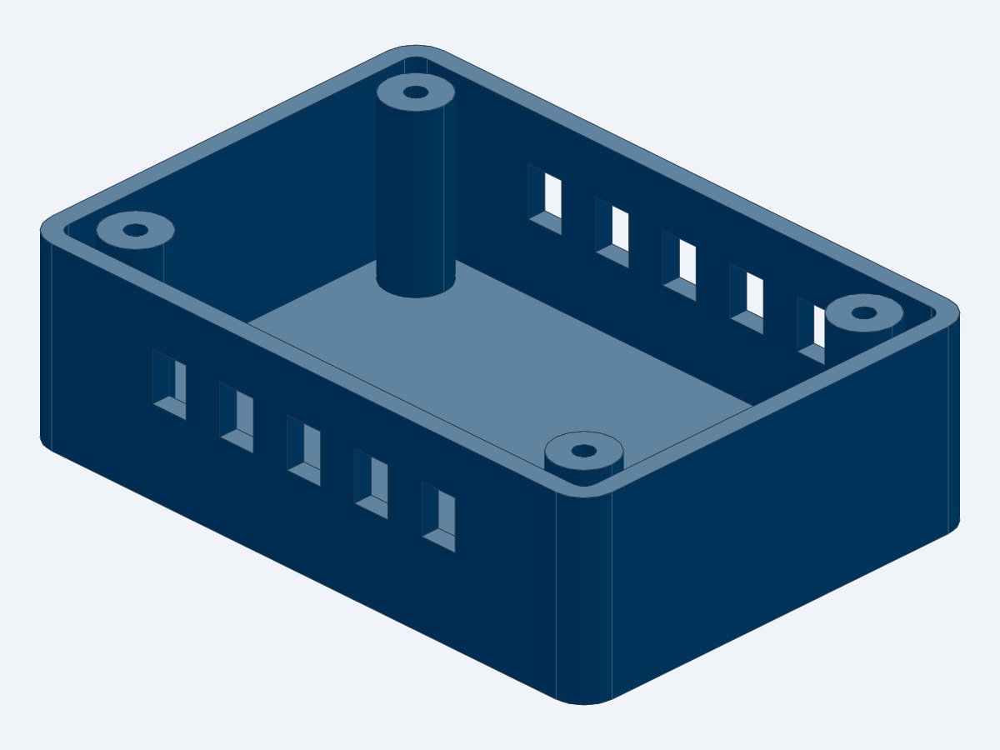
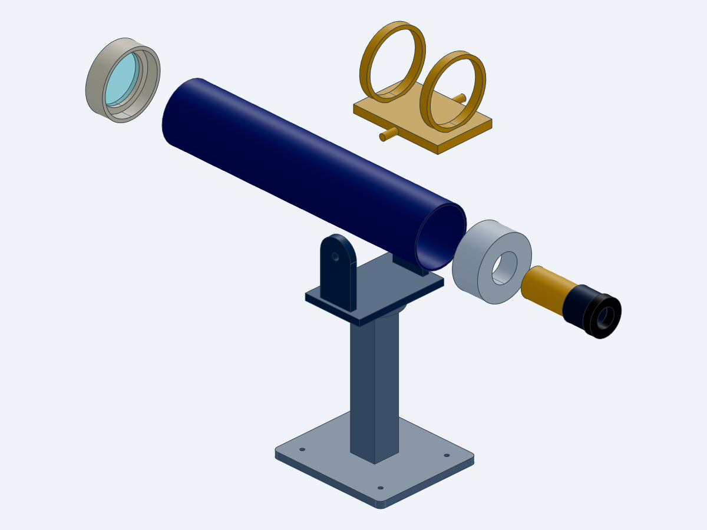
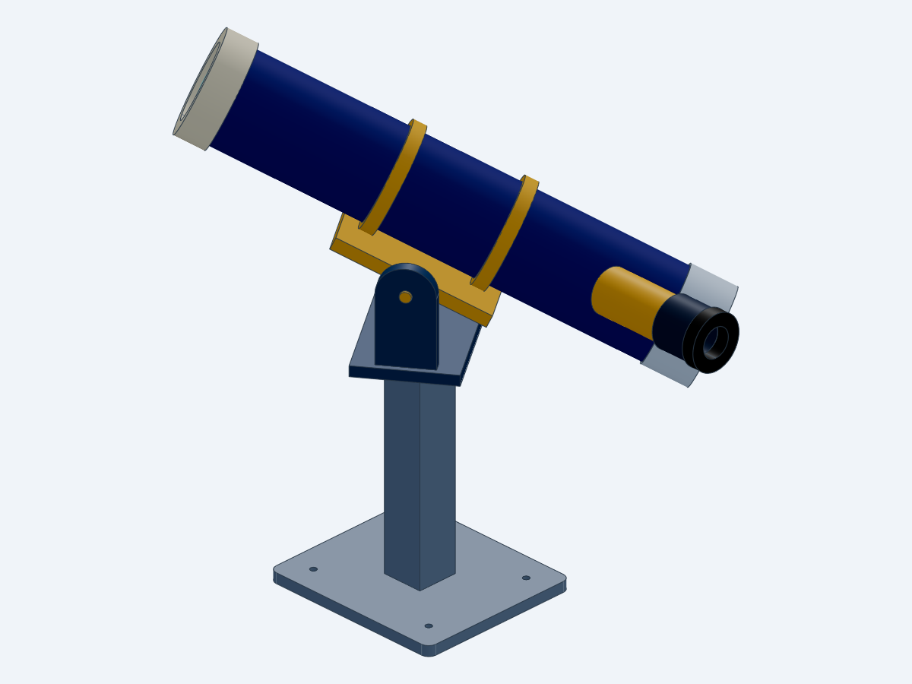

你 · 用户
确定目标、提供真实配件和使用条件、审阅结果
产出：需求、尺寸图、STEP、规格书、修改意见把语言模型对需求的理解，落实成参数化建模代码、独立零件、装配、可交换文件与实测记录。真实配件资料越完整，配套结构的设计依据越充分。
固定插件版本 0.7.10 · 几何与结构工作流 · 产品功能按对应专业要求另行验证
图中“实测”来自本项目保存的文件与报告；“提供”来自固定版本的技能说明；适用方向需要结合实际资料再设计和验证。

它是第三方维护的代理技能库，并提供 Codex 等应用的原生插件安装方式。本机已安装 Codex 插件。技能提供工作方法，cadgen 提供执行与查看工具，build123d 提供 Python 建模接口，OCP 连接 OpenCascade 几何内核。自然语言理解与设计决策由语言模型承担。
确定目标、提供真实配件和使用条件、审阅结果
产出：需求、尺寸图、STEP、规格书、修改意见设计结构、补全假设、拆分特征与零件、编写代码和验收、根据失败修正
产出：Python 源码、装配关系、检查规则与说明提供工作约定，组织构建、子模型依赖、导出、读取与查看
产出：CAD 文件、运动旁文件、构建记录与视图执行曲面和实体运算，提供尺寸、有效性、最近点与交叠等查询
产出：几何实体与测量结果，判定由验收规则完成我定义尺寸、基准、实体特征、位置和装配关系；建模过程可包含拉伸、旋转、布尔、圆角与曲面等操作。参数控制只是这一过程的一部分。
OpenCascade 用曲线、曲面和拓扑组成 B-rep 实体。查看器的表面显示来自几何的离散化；尺寸与干涉验收读取保存的 CAD，而非凭截图判定。
改尺寸需要改源码并重建；运动声明驱动显示姿态。STEP 是交换几何，本项目的完整参数与特征构造留在 Python 中；转移运动模型需保留旁文件。
接口依据：固定版本 CAD 技能、运动声明、OpenCascade 官方说明。
本机有 13 个技能快照，其中一个用于环境检查。下表按实际用途合并说明；安装技能不等于装齐每个可选依赖，也不等于完成了实测。
| 能力 | 可以做什么 / 本项目证据 | 状态 / 所需依据 |
|---|---|---|
| 参数化实体建模 | 按尺寸构造空腔、通孔、凸台、圆角、槽等特征；复用代码生成不同规格。拉伸、旋转、扫掠、放样等由建模接口和内核提供。 依据与覆盖：安装板、参数变体、电子外壳、望远镜；并未逐一测试所有建模算子。 | 部分实测 尺寸、单位、基准、特征位置与构造顺序 |
| 独立零件与装配 | 保留零件层级和标签，明确定位、同轴、孔位、套接、避让及间隙；可复用子模型。 依据与覆盖：四销装配、外壳装配、11 实体望远镜与分解展示。 | 已实测 零件几何、接口、坐标基准和相互关系 |
| 运动与动画 | 声明转动、滑动、耦合和姿态；另有动画声明接口。当前查看器使用树形正向运动学，闭环机构求解不在该接口范围。 依据与覆盖：望远镜方位、仰角、调焦与 home / focused / observing；没有验证任意机构或动力学。 | 运动已实测 / 动画未实测 父子对象、轴、原点、运动范围与姿态；复杂闭环另需求解方案 |
| 文件交换与查看 | STEP 为主要实体交换格式；可输出 STL、3MF、GLB。查看器可旋转、选取、测量、剖切和分解。 依据与覆盖：本项目已输出 STEP、GLB、STL；查看与 Position 姿态已确认。3MF 导出和所有查看器工具未逐项实测。 | 部分实测 用途对应的格式；携带运动声明时保留旁文件 |
| 测量与几何验收 | 读取保存的 CAD，检查实体有效性、尺寸、孔位、体积、材料占用、最近间隙和零件干涉。 依据与覆盖：安装板 409 项、外壳 721 项、望远镜 537 项分别通过；检查规则由我编写。 | 已实测 独立预期规格、测量对象、单位、阈值及覆盖范围 |
| 二维图纸 | 工程图技能从几何投影生成 PDF 视图、尺寸和孔标注；DXF 技能生成轮廓、模板、垫片和切割布局。 依据与覆盖：A3 安装板工程图已生成并复核；未完成 DXF 实验。固定版本工程图接口仍有视图与排版限制。 | PDF 已实测 / DXF 未实测 图纸视图、尺寸意图、公差、备注和制造用途 |
| 真实配件复用与搜索 | 可读取供应商 STEP；step.parts 技能用于查找电机、轴承、连接器、螺钉等目录零件。 依据与覆盖：固定版本的 CAD 与 step.parts 技能说明；本次望远镜采用自行构造的概念零件。 | 提供技能，未实测 真实型号、尺寸图或 STEP，核对型号和规格；目录检索需要网络 |
| 制造与打印前检查 | DFM 面向钣金、CNC、注塑；DfAM 面向壁厚、悬垂、支撑和方向等；SendCutSend 做指定服务的上传前检查。 依据与覆盖：已阅读固定版本技能；本项目没有制造适配或生产批准结论。 | 提供技能，未实测 材料、工艺、供应商规则和对应依赖；指导式审查需结合实测 |
| 切片与打印交接 | G-code 技能调用 OrcaSlicer 和打印机配置；Bambu 技能通过官方应用交接打印文件。 依据与覆盖：本项目没有切片、发送打印或实际打印；Bambu 技能由用户在应用中选择打印机并启动。 | 提供技能，未实测 切片器、打印机与材料配置，以及对应应用和设备 |
| 机器人描述与仿真交接 | URDF 描述连杆、关节和惯性；SRDF 描述 MoveIt 规划语义；SDF 描述仿真模型、世界、传感器等。 依据与覆盖：本项目没有运行机器人仿真、规划或物理求解。SDF 在这里指 SDFormat。 | 提供技能，未实测 结构、坐标系、质量惯性、关节限制与目标仿真或规划环境 |
STEP实体与装配交换
STL / 3MF网格与打印工作流
GLB三维展示与交换
PDF / DXF工程图与二维轮廓
URDF / SRDF / SDF机器人与仿真描述
工作流清单依据：固定版本上游仓库与各技能；状态依据本项目报告，详细边界见下文。
这次望远镜展示了几何与动作的完整流程。更高层级需要补齐接口和专业验证，演示的外观复杂度不能直接代表能力上限。
按明确规格生成支架、安装板、连接件、外壳、夹具和尺寸变体。
80 mm 安装板改为 100 mm，孔位按构造规则变化并独立测量。形成可检查的装配、分解展示、套接与运动姿态。
望远镜含 11 个实体、三个自由度，保存 20 mm 伸出变体并检查指定姿态。依据镜片、电机、相机模块、传感器等真实接口设计镜座、外壳、支架与连接件。
输入实际尺寸或供应商模型后才有匹配依据；本项目尚未做真实供应商配件装配实验。CAD 可承载结构方案；成像、强度、散热、电路、控制、稳定性和可制造性需要各自的数据与验证。
本次镜片只是几何占位；模型外观、有效实体或可动姿态都不足以证明望远镜能成像。可以依据真实物镜、镜筒或相机模块设计镜座、压圈、外壳、支架、连接件、调焦或云台结构，并检查明确的几何关系。光学成像还需镜片处方、材料数据、像差分析；完整相机还涉及传感器、电路、固件、散热和整机测试。CAD 产物承载结构方案，产品性能按这些要求继续验证。
价值集中在有明确目标和接口的定制结构，以及可以保留、修改、复现和验收的项目资产。
把真实模块、镜片、电机或连接器的规格转成支架、安装件、镜座和外壳，让设计围绕实际接口展开。
尺寸与关系保留在源码中，修改一次构造规则后重新生成；可以形成自己的模型工厂和零件模板。
从文字进入实体、装配、分解和运动视图，用具体几何与测量支持下一轮需求沟通。
通过回读、间隙与干涉检查暴露问题；望远镜的 60° 干涉在生成后被发现并修正。覆盖范围仍需明示。
观察需求、基准、特征、参数、代码、几何结果之间的关系，学习可复现的设计与验收流程。
交付源码、交换模型、图纸、实际检查和假设记录；后续可继续接入制造、打印或仿真工作流。
尽量提供实际型号、STEP、尺寸图或规格书。图片和口头尺寸也能用于推进，但缺失的尺度、接口和工艺条件要明确记为假设。
| 资料 | 具体例子 | 它解决什么 |
|---|---|---|
| 配件身份与几何 | 真实型号、供应商 STEP、尺寸图、规格书；说明文件版本和单位。 | 明确设计围绕哪一个实体与接口，减少猜测。 |
| 关键尺寸与安装接口 | 外形包络、孔径与孔距、轴径、螺纹、安装面、连接器位置；镜片还需边缘厚度等。 | 决定定位、套接、固定及空间适配。 |
| 使用与运动 | 固定方式、自由度、行程、转角、装配方向、避让区域和维护空间。 | 从静态外形进入具体结构和动作要求。 |
| 配合与制造条件 | 3D 打印或机加工、材料、配合松紧、生产公差、工具和供应商要求。 | 把名义尺寸转成有制造依据的结构。 |
| 工作环境与性能 | 载荷、温度、防水、振动、寿命；涉及成像则提供光学处方和成像目标。 | 说明需要接入哪些专业分析与实物测试。 |
| 验收与交付 | 需要哪些 CAD 格式、检查哪些尺寸与姿态、是否需要图纸、哪些结果必须报告。 | 明确完成标准和未验证范围。 |
先给配件和用途，再给接口、工况、制造与验收。数据不足时可以先做概念结构，再逐项替换为实测信息。
目标：为【实际配件型号】设计【支架 / 外壳 / 镜座 / 连接件】。 配件资料：【STEP / 尺寸图 / 规格书】，单位【mm】。 安装接口：【孔径、孔距、轴径、螺纹、安装面】。 使用条件：【固定方式、行程、转角、避让、载荷】。 制造条件：【工艺、材料、配合、公差】。 交付与验收：【STEP / 网格 / 图纸，以及需检查的尺寸与姿态】。 缺失数据：请列为假设，并区分几何验收与专业性能验证。
没有足够依据给出“超过多少零件就不能做”的固定上限。能否继续细化，取决于结构是否可描述、资料是否充分、构造是否稳定、关系是否可管理和结果是否能验证。
一句话没有覆盖接口、基准、配合、工艺和性能时，我需要补全方案与假设。模型能画出来，并不能证明这些假设符合真实产品。
复杂曲面、薄壁、相切或小特征可能使布尔、圆角等运算失败；还需考虑构造顺序、数值容差、资源与显示开销。
装配越复杂，接口、运动空间、紧固、维修和误差关系越多；当前运动接口没有通用闭环机构求解器。没有依据可以给出固定的复杂度上限。
截图不证明尺寸正确，几何有效不证明匹配，有限姿态采样不证明连续全行程无碰撞。检查项数也不等同于工程成熟度。
光学、强度、热、电路、控制与制造各有专业模型、数据和测试。插件工作流可协助组织产物，完整产品的可靠性仍需要这些环节。
参数和特征构造主要保留在 Python 源码；本项目 STEP 不携带完整的源码参数与特征历史。运动旁文件驱动显示姿态，改变尺寸需改代码重建。
| 容易形成的理解 | 完整理解 |
|---|---|
| 能力就是调整几个尺寸 | 参数控制只是其中一层；我还要定义实体构造、零件拆分、装配、运动与验收规则。 |
| 复杂模型只能做到演示外观 | 几何还能继续细化；复杂度主要增加了建模稳定性、约束管理和工程验证的难度。 |
| 给出方向后，插件自动选好全部配件 | 方案和接口由我依据资料组织；目录检索只是辅助，型号、规格与适配仍需核对。 |
| 提供真实参数就一定能直接使用 | 真实资料提供匹配依据；制造公差、紧固、工作性能与实物仍要按要求验证。 |
| 望远镜能转动就说明能成像 | 本次运动只验证结构声明与指定姿态；镜片是占位几何，没有成像性能结论。 |
| 插件只属于 Codex | 它是第三方技能库，也提供多个代理应用的安装方式；本机实际采用 Codex 插件。 |
检查项数来自实际报告，用于标明本次执行范围；它们不是通用评测分数，也不代表完整产品的工程成熟度。



第一次运动采样有 6 项失败，最大交叠体积 15121.56 mm³。我将支架底板降低 30 mm，保留转轴位置、运动范围和验收规则，插件重建后重新回读：537 项通过、0 项失败。
已检查基准、调焦伸出与三个指定运动姿态；没有证明连续全行程、承载、真实紧固或光学性能。报告的数值容差属于计算判定阈值，不能当作加工精度。

本机已在用户级安装 text-to-cad 0.7.10；子项目保存独立 Python 环境和技能快照。技能恢复与安装记录见仓库 README。完整演示页回放本次实际过程，内嵌 CAD 查看器可实时交互；网页按钮不会调用语言模型或重新建模。
cd projects/006-text-to-cad uv sync --frozen # 首次生成快照需要 Chromium uv run --frozen python -m playwright install chromium --only-shell # 重建望远镜、验收并生成快照 pwsh -NoProfile -File scripts/run-telescope-demo.ps1 # 启动网页与 CAD 查看器，打开返回的 demo_url uv run --frozen python scripts/serve_telescope_demo.py
总览图、图片与报告可在线阅读。实时 CAD 查看与重建需要本地运行时，打印、目录检索和仿真各有额外环境要求；本次未进行物理打印或采购。
text-to-cad / cadgen 0.7.10；本项目 build123d 0.11.1；OCP 7.9.3.1.1。官方文档可能随上游更新，项目复现以 uv.lock 和固定技能快照为准。
依据本机固定版本技能、实际源码与保存报告，以及上游官方资料整理。已实测、文档提供和适用方向分别标记；未进行物理打印或采购。总览网页可静态阅读，实时 CAD 演示按本地复现说明运行。